Początki systemu Android sięgają roku 2009, kiedy to pojawiła się pierwsza stabilna wersja 1.5 Cupcake. Wraz z rozwojem do wersji drugiej 2.2 Froyo, a nastepnie 2.3 Gingerbread, popularność tego systemu diametralnie wzrosła. Jak wynika z raportu przygotowanego dla OpenSignal w sierpniu bierzącego roku na rynku jest obecnie 18796 różnych modeli urządzeń z Androidem.
Jak duża to jest skala najlepiej obrazuje ta ikonografika.
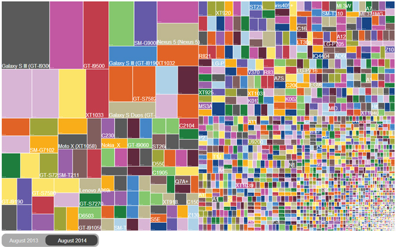
Fot/Źródło: opensignal.com
Z raportu tego wynika również, że obecnie najpopularnieszą wersją jest 4.4 KitKat. Ale co jeśli nasz producent nie zapewnił nam aktualizacji do najnowszej wersji, z pomocą przychodzi projekt Android-x86, który zajmuję się przeportowywaniem Androida na platforme x86. W chwili obecnej najnowszą wersją jest Android-x86 4.4 R1 KitKat.
Instalacja w VirtualBox
Instalacja jest dziecinnie prosta.
- Należy wybrać niebieski przycisk New w VirtualBox, nadać nazwe naszej wirtualnej maszynie np. Android 4.4 KitKat, następnie wybrać typ jako Linux i wersje 2.6/3.x.
- Ustawić pamięć jako 1024 MB i kliknąć Create.
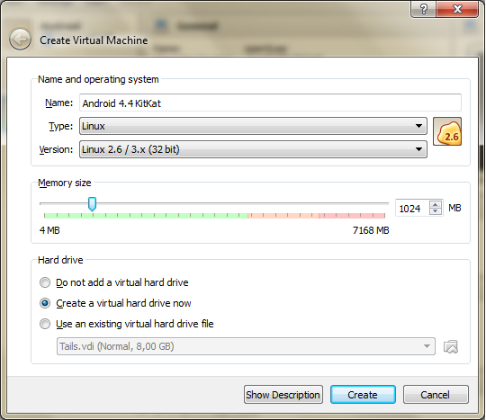
- W oknie Create Virtual Hard Drive należy zmienić rozmiar na 6 GB i ustawić Fixed size.
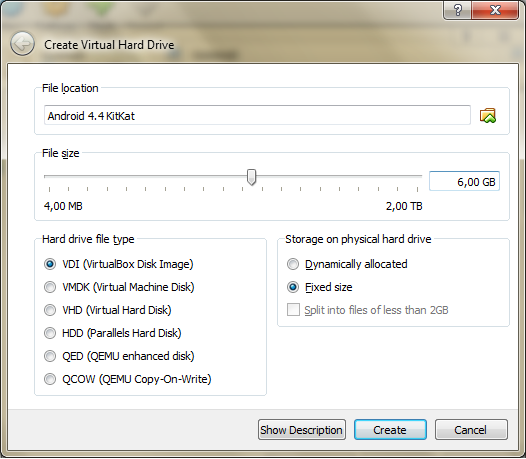
- Następnie klikamy Settings i przechodzimy do zakładki Storage, gdzie dodajemy nasz plik z obrazem ISO : android-x86-4.4-r1.iso, zaznaczamy Live CD/DVD i zatwierdzamy nasz wybór. 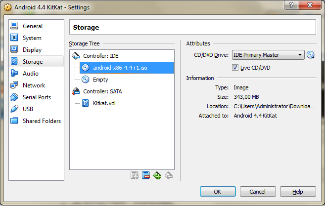
- Teraz uruchamiamy naszą wirtualną maszynę i wybieramy Instalation, zatwierdzająć klawiszem Enter.
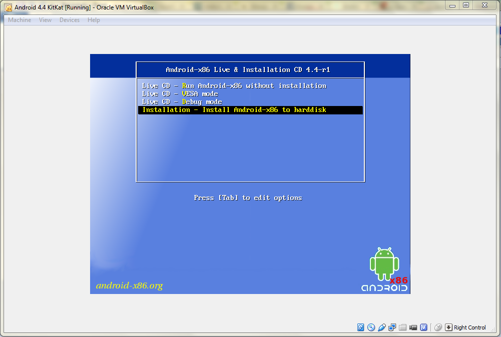
- Kolejnym krokiem jest utworzenie nowej partycji wybieramy Create/modify partitions, czasami zamiast tego ekranu na ekranie pojawia się komunikat: kernel panic - not syncinng ... W tym wypadku należy zrestartować komputer i w BIOS aktywować opcje Virtualization Technology i poraz kolejny uruchomić instalacje.
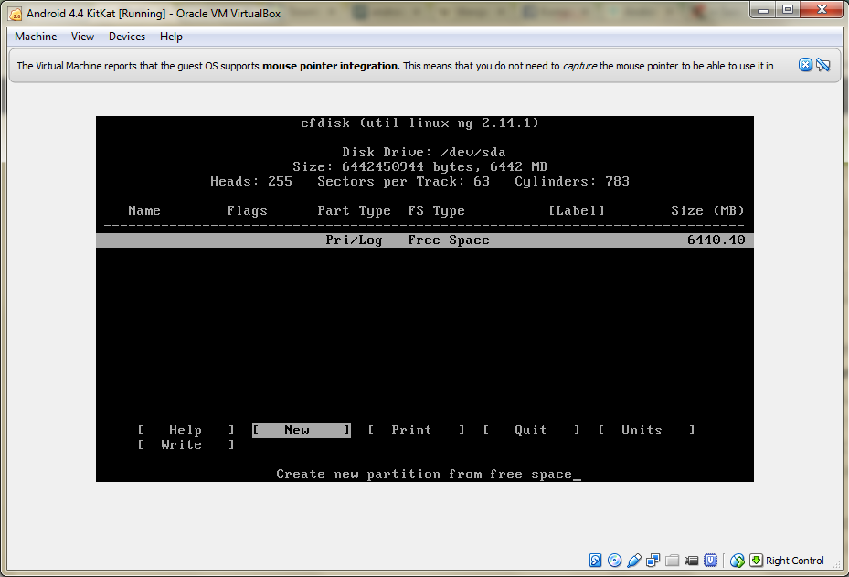
- Następnie przechodzimy już do tworzenia partycji na wcześniej zarezerowowanym obszarze. Przesuwamy strzałką w prawo nad [New] i zatwierdzamy klawiszem Enter. Następnie po raz kolejny klikamy Enter zatwierdzając [Primary] i ustalamy rozmiar, który pozostawiamy bez zmian poprzez kolejne zatwierdzenie go klawiszem Enter.
- Ustawiamy stworzoną partycje jako [Bootable] i wybieramy [Write]. Zostaniemy zapytani czy jesteśmy pewni że chcemy ją utworzyć, wpisujemy yes i zatwierdzamy. Teraz możemy zamknąć menadżer partycjonowania wybierając [Quite].
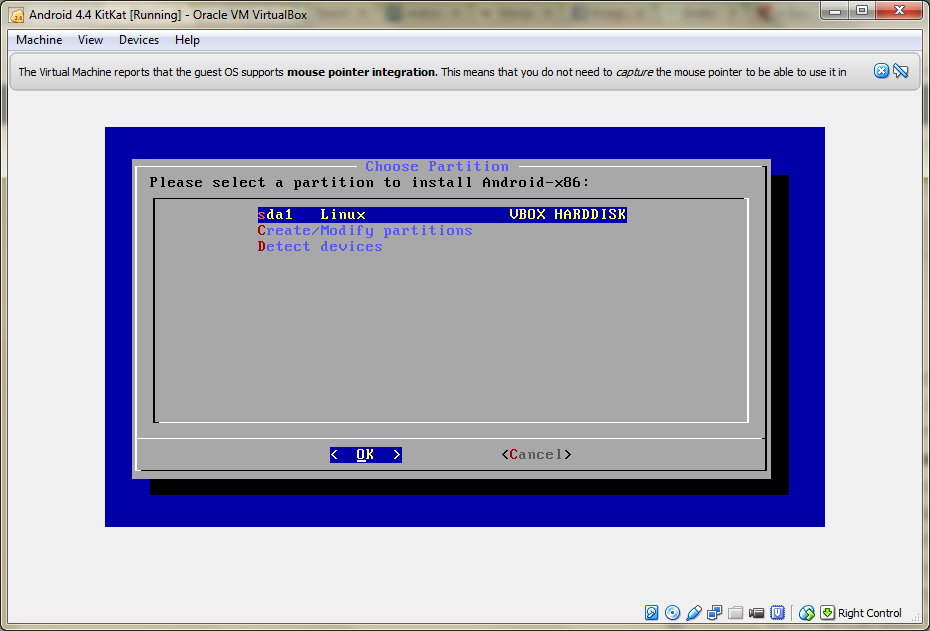
- Wybieramy utworzoną partycje i ustalamy system plików na ext3 i potwierdzamy, że jesteśmy tego pewni wybierając < Yes >.
- Następnie potwierdzamy instalacje boot loadera Grub, wybierając < Yes >, jest to ważne ponieważ bez niego nasz system się nie uruchomi.
- W kolejnym kroku ustawiamy /system jako read-write i zatwierdzamy.
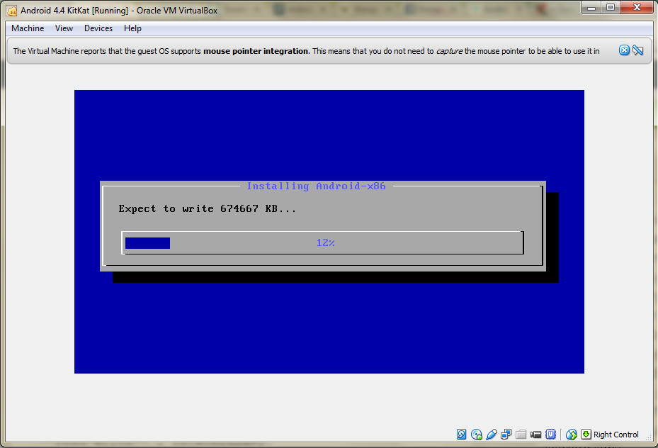
- Teraz czekamy aż wszystko zostanie wypakowane, następnie wysuwamy nasz obraz ISO i zatwierdzamy komunikat poprzez wybranie Force unmount i wybieramy na ekranie opcje Reboot
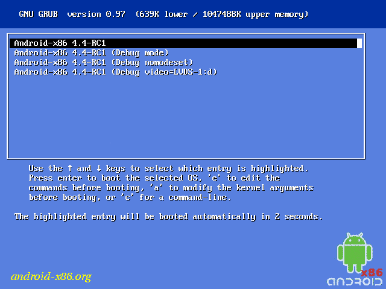
- Po uruchomieniu pokaże się ekran wyboru, wybieramy pierwszą opcje i zatwierdzamy ją, po chwili zobaczymy już ekran konfiguracji pierwszego uruchomienia.
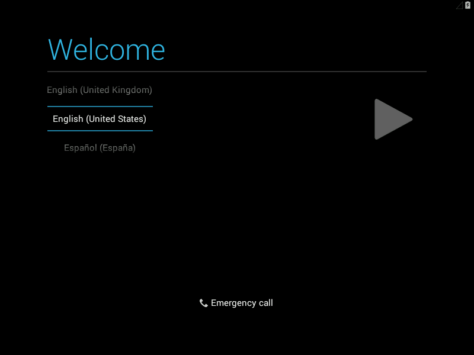
- Wybieramy język Polski, w wypadku kiedy mysz nie działa poprawnie z menu wybieramy opcje Disable Mouse Integration, następnie pomijamy ustawianie sieci Wi-Fi. Na tym etapie konfiguracja się kończy.
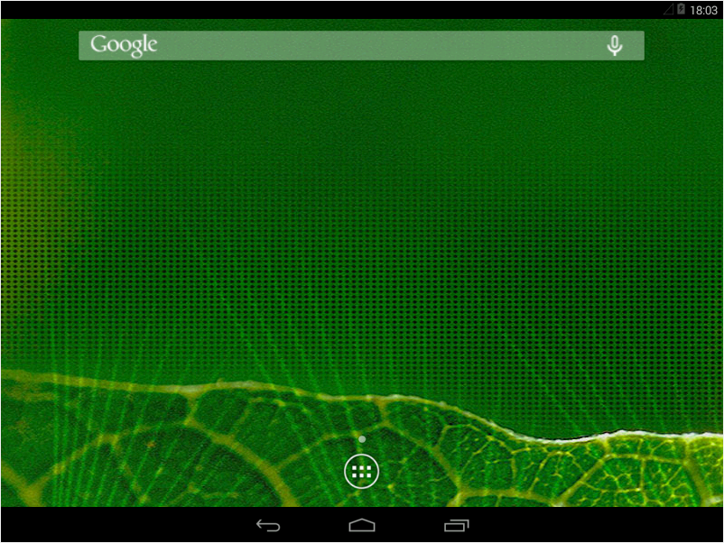
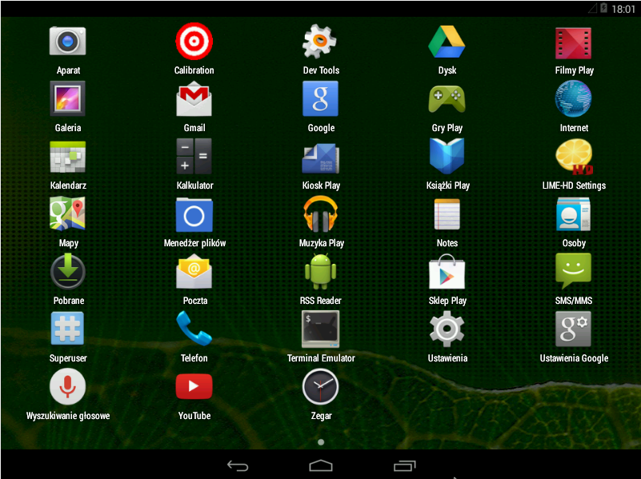
Udanej zabawy!